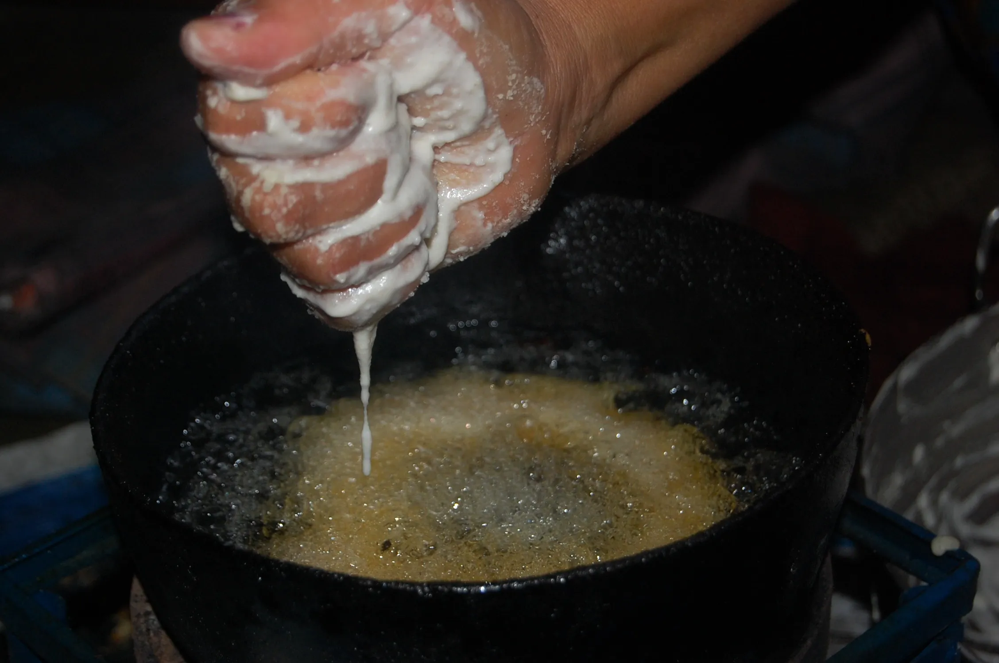

Home
Sel Roti Recipe

Sel Rotiis a traditional, ring-shaped Nepali treat, often described as a cross between a doughnut and a bagel. It has a crispy, golden-brown exterior with a soft, slightly sweet, and fluffy inside. This deep-fried delicacy is especially popular during festivals like Tihar and Dashain. It is commonly enjoyed with yogurt, vegetable curry, or simply with a cup of tea.
Ingredients
- Soaked Rice
- Sugar
- Ghee
- Baking Powder
- Mustard Oil
Steps
- Drain the soaked rice and grind it into a fine paste with minimal water. Transfer to a bowl.
- Add sugar, ghee, and cardamom powder (and baking powder if using). Mix into a thick, smooth batter, adding milk only if too stiff. It should ribbon off a spoon.li>
- Heat oil in a wide pan over medium heat. Test with a drop of batter—it should sizzle and rise. Grease your hand (or a funnel), hold it over the oil, and pour the batter in a steady, continuous circle to form a ring.
- Fry 2-3 at a time, turning occasionally, until uniformly golden brown and crispy. Drain on paper towels. Serve warm or at room temperature.